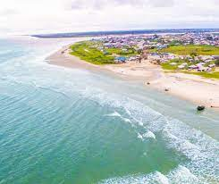
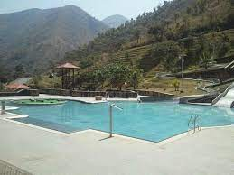
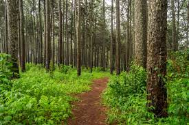
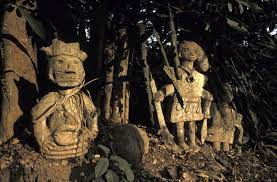
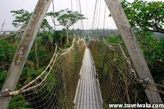

| LOCATION | DESTINATIONS | VIEW |
|---|---|---|
| AKWA IBOM STATE | THE IBENO BEACH |  |
| CROSS RIVER STATE | OBUDO MOUNTAIN RESORT |  |
| ENUGU STATE | NGWO PINE FOREST |  |
| ABIA STATE | AROCHUKWU LONG JUJU SLAVE ROUTE |  |
| LAGOS STATE | LEKKI CONSERVATION CENTRE |  |
A blissful destination for tourists stretched over 245km on a sand bank in Ibeno lies
the Ibeno Beach, a little haven for leisure seekers. The roaring waves, spots for sunbathing,
unpolluted foliage of the mangrove forest, cool breeze from the water
and a lush surrounding give this destination an unimaginable allure for tourists.
Above the sea level on the Oshie Ridge of the famous Sankwala Mountains sits majestically the Obudu Mountain Resort.
The temperate climate, breathtaking views, idyllic tranquility and beautiful scenery has made this resort one of the famous tourists’ sites in Nigeria.
The unique forest dynasty that is found in Ngwo Pine is a huge draw for visitors, romantically set by Mother Nature with sharp twists for adventure seekers,
beautifully set pine trees and gently flowing stream for lovers, and the loud splashing of the waters inside the dark cleft inside a cave would blow off one’s imagination.
The sacred altar, a six foot gully that takes people to the temple and the waterfall in Arochukwu Long Juju Slave route,
beg tourists to explore the shrine of Ibn Ukpabi and the cult momument of Kamula
Located in the middle of Lagos, this conservation center is home to abundant plants and wildlife and plays a vital role in preserving the region’s ecosystem.Sign up for a guided tour with transportation included,
or you can just as easily hail a rideshare and make your own way there. Take a stroll through the swamp boardwalk and spot rare birds, monkeys, snakes, and crocodiles. The park is also home to the longest canopy walkway in Africa,
offering 360-degree views from above the treetops. If you’re afraid of heights, fret not—crossing this suspended walkway is optional. – Tripadvisor